Схема, которая помнит
В комбинационной схеме выход зависит только от текущих входов: y = f(u). Те же входы — всегда тот же результат.
Но если выход схемы подать обратно на её вход (обратная связь), выход начинает зависеть ещё и от того, что было раньше. У схемы появляется память.

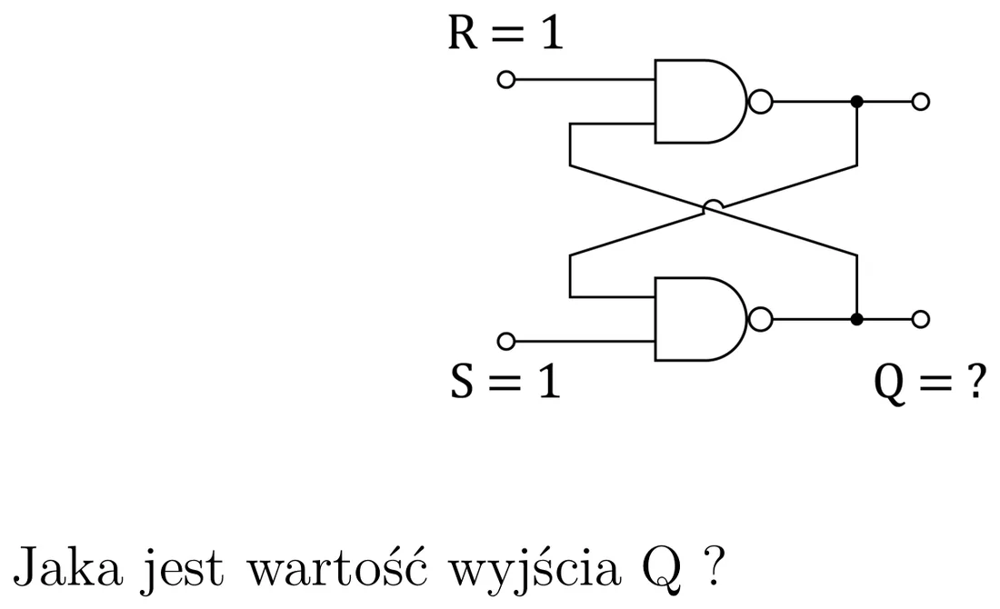

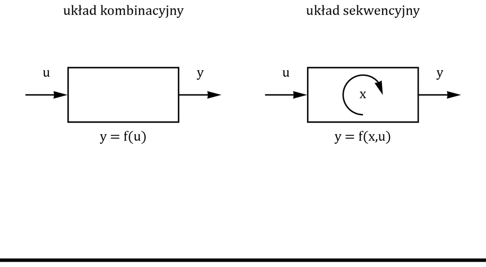
На вопрос с рисунка («R = 1, S = 1 — чему равно Q?») ответ такой: неизвестно — зависит от того, что было раньше. Это и есть эффект памяти.
В последовательностной схеме (układ sekwencyjny) появляется внутреннее состояние x:
- Новое состояние зависит от старого состояния и от входов.
- Состояние может быть не видно на выходе — поэтому оно «внутреннее».
По-простому
Комбинационная схема — это калькулятор: вводишь 2 + 2, получаешь 4, всегда. Последовательностная схема — это автоматическая ручка с кнопкой: одно и то же нажатие то выдвигает стержень, то прячет его, потому что ручка «помнит», в каком она состоянии.
Автоматы Мура и Мили

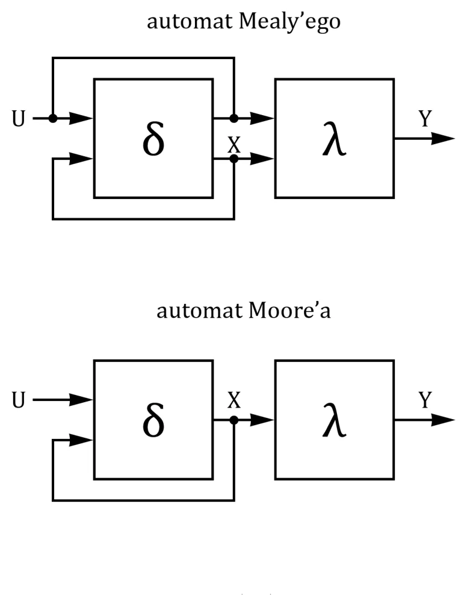
- Блок δ (с памятью) определяет следующее состояние.
- Блок λ — обычная комбинационная схема, вычисляющая выход.
- Автомат Мура: выход зависит только от состояния.
- Автомат Мили: выход зависит от состояния и входов.
RS-триггер
Триггеры (przerzutniki) — основные элементы, из которых строят последовательностные схемы. Каждый помнит один бит. Самый простой — RS из двух вентилей NAND:

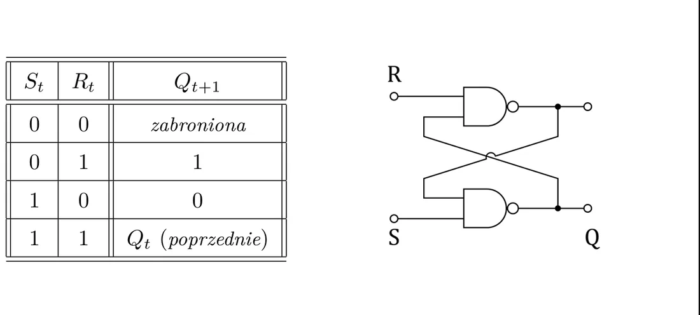
| S | R | Qt+1 | Что происходит |
|---|---|---|---|
| 0 | 0 | — | запрещённая комбинация |
| 0 | 1 | 1 | установка (set) |
| 1 | 0 | 0 | сброс (reset) |
| 1 | 1 | Qt | хранение — без изменений |
Этот вариант активен низким уровнем: «нажатие» — это подача нуля. S = 0 устанавливает Q в 1, R = 0 сбрасывает Q, а когда на обоих входах единицы — триггер помнит.
От автора сайта (не из лекции)
RS-триггер, собранный из вентилей NOR, работает наоборот — он активен высоким уровнем (S = 1 устанавливает, R = 1 сбрасывает, 00 хранит, 11 запрещено). Оба варианта есть в шаблоне к лабораторной 10.
Тактовый сигнал
В последовательностных схемах важен порядок изменений. Чтобы всё менялось в одни и те же, строго определённые моменты, добавляют тактовый вход (zegar, C, CLK).

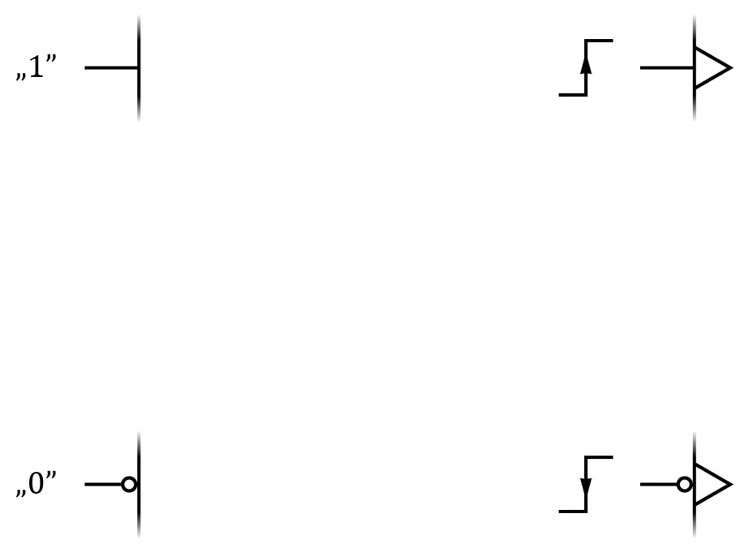
- Срабатывание по уровню: схема реагирует, пока тактовый сигнал равен 1 (или 0).
- Срабатывание по фронту: схема реагирует только в момент изменения тактового сигнала, обычно с 0 на 1 (нарастающий фронт, zbocze narastające). На символе это обозначается треугольничком у тактового входа.
Защёлка (RS-триггер с тактовым входом)

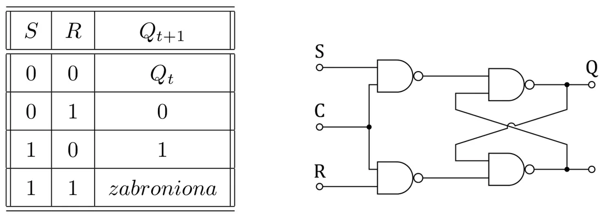
| S | R | Qt+1 (при C = 1) |
|---|---|---|
| 0 | 0 | Qt — без изменений |
| 0 | 1 | 0 |
| 1 | 0 | 1 |
| 1 | 1 | запрещено |
- При C = 0 изменения на S и R ни на что не влияют.
- При C = 1 выход меняется по таблице.
- Переход C с 1 на 0 «защёлкивает» состояние — отсюда название защёлка (zatrzask, latch).
Триггеры D, JK и T
Тип D

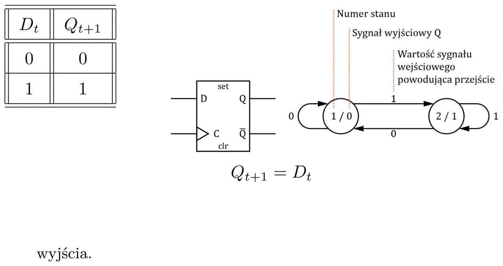
Самый простой и самый распространённый: в момент фронта тактового сигнала он запоминает то, что на входе D, и держит до следующего фронта. У него есть ещё асинхронные входы (действуют сразу, независимо от тактового сигнала): SET (установить Q = 1) и CLR (сбросить Q = 0).
По-простому
D-триггер — это фотоаппарат. Вход D — сцена, фронт тактового сигнала — нажатие на спуск, а Q — снимок: он показывает то, что было в момент «щёлк», и не меняется, пока не сделаешь следующий.
Тип JK

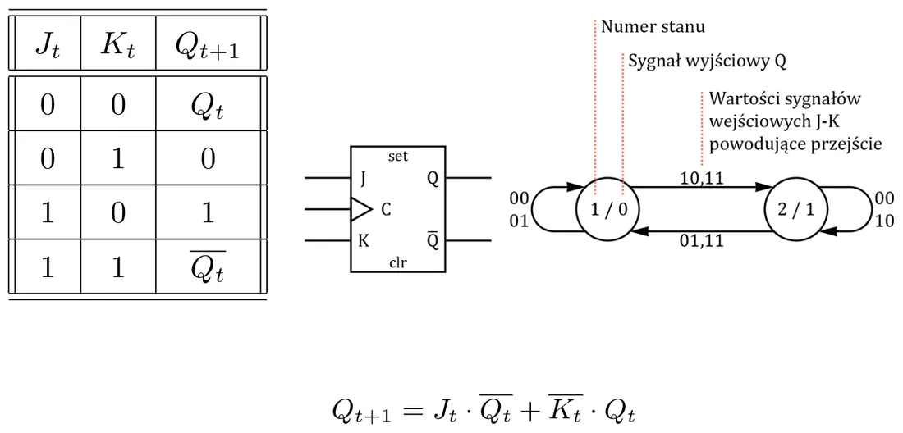
| J | K | Qt+1 | |
|---|---|---|---|
| 0 | 0 | Qt | хранить |
| 0 | 1 | 0 | сбросить |
| 1 | 0 | 1 | установить |
| 1 | 1 | переключить на противоположное |
Как RS, но без запрещённой комбинации — при 11 триггер переключается.
Тип T

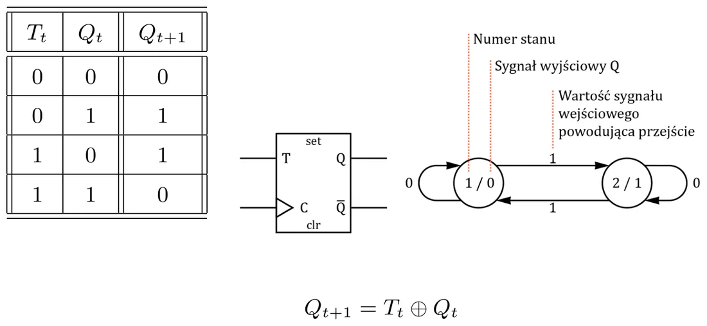
T = 1 → по фронту состояние меняется на противоположное; T = 0 → без изменений. (T от toggle/trigger.)
Делитель частоты на 2

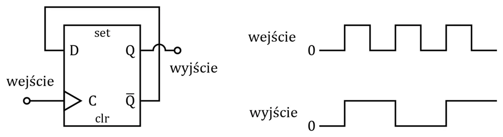
JK-триггер с J = K = 1 (или D-триггер, у которого на вход D подан его собственный ) меняет состояние на каждом фронте. На выходе получается сигнал вдвое меньшей частоты. На этом основаны счётчики.
Регистры
Сдвиговый регистр

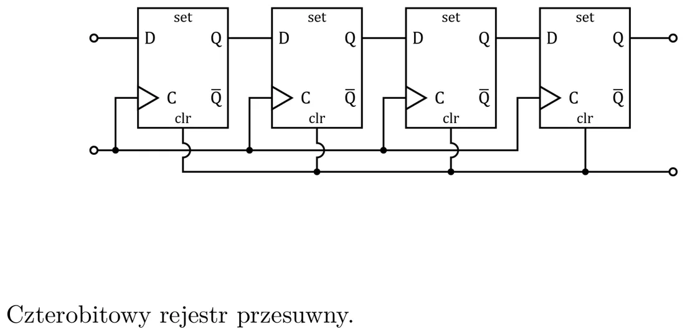
Несколько D-триггеров, соединённых в цепочку: выход Q одного идёт на вход D следующего, а тактовый сигнал общий. На каждом фронте содержимое сдвигается на одну позицию.
Если на вход постоянно подавать единицу, регистр заполняется так: 0000 → 1000 → 1100 → 1110 → 1111.
Кольцевой счётчик

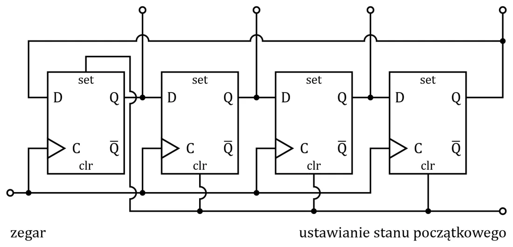
Сдвиговый регистр, замкнутый в кольцо. Одна единица бегает по кругу: 1000 → 0100 → 0010 → 0001 → 1000… Сначала нужно задать начальное состояние (входы SET/CLR). Четыре триггера дают 4 состояния — код «1 из N».
Счётчик Джонсона

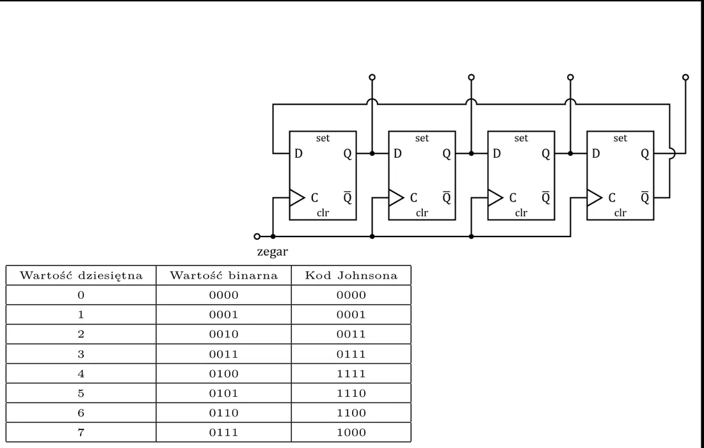
Кольцо с инверсией: на вход первого триггера идёт последнего. Регистр сначала заполняется единицами, потом нулями:
Четыре триггера дают 8 состояний (вдвое больше, чем в кольцевом). В коде Джонсона соседние состояния отличаются одним битом.
Генератор псевдослучайных чисел (PRBS)

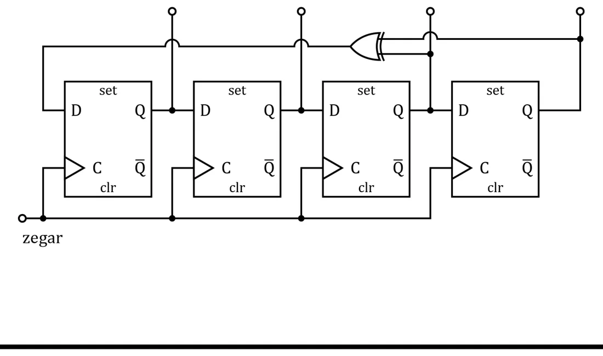
На вход регистра подаём XOR выбранных выходов. Получается последовательность, которая выглядит случайной (Pseudo-Random Binary Sequence), хотя на самом деле она периодична. Для 8-битного регистра с отводами 2, 3, 4, 8 период равен 255; для 10-битного с отводами 7, 10 — 1023.
От автора сайта (не из лекции)
Для 4-битного регистра самую длинную последовательность (15 состояний) даёт XOR выходов триггеров 3 и 4. Состояние 0000 — ловушка: XOR одних нулей равен нулю, поэтому регистр из него никогда не выйдет — генератор нужно запускать с ненулевого состояния (в шаблоне с занятий: 0001).
Счётчики
Асинхронный двоичный счётчик

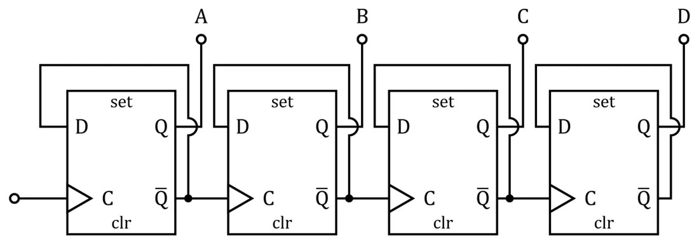
Несколько делителей на 2 один за другим: первый триггер тактируется тактовым сигналом, каждый следующий — выходом предыдущего. Первый меняется каждый импульс, второй — каждые два, третий — каждые четыре… Выходы A, B, C, D образуют двоичное число 0…15.
«Асинхронный» значит, что у триггеров нет общего тактового сигнала — изменение «прокатывается» через ступени.
Счётчик по модулю N

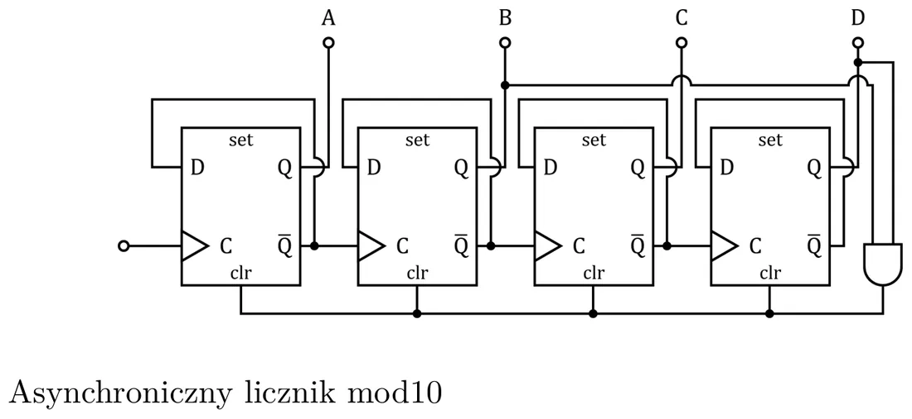
Счётчик mod 10 должен считать 0, 1, …, 9 и возвращаться к 0. Способ: вентиль обнаруживает состояние 10 (двоичное 1010 — единицы на B и D) и сразу подаёт сигнал на входы сброса CLR всех триггеров.
Рецепт счётчика mod N
- Запиши число N в двоичном виде.
- Вентилем AND (или NAND — смотря на что реагирует CLR, на 1 или на 0) обнаружь единицы этой записи.
- Выход вентиля подключи к CLR всех триггеров.
Счётчик mod 6: 6 = 0110 → AND выходов B и C. Состояние 6 появляется лишь на мгновение и сразу превращается в 0.
Счётчик от X до Y

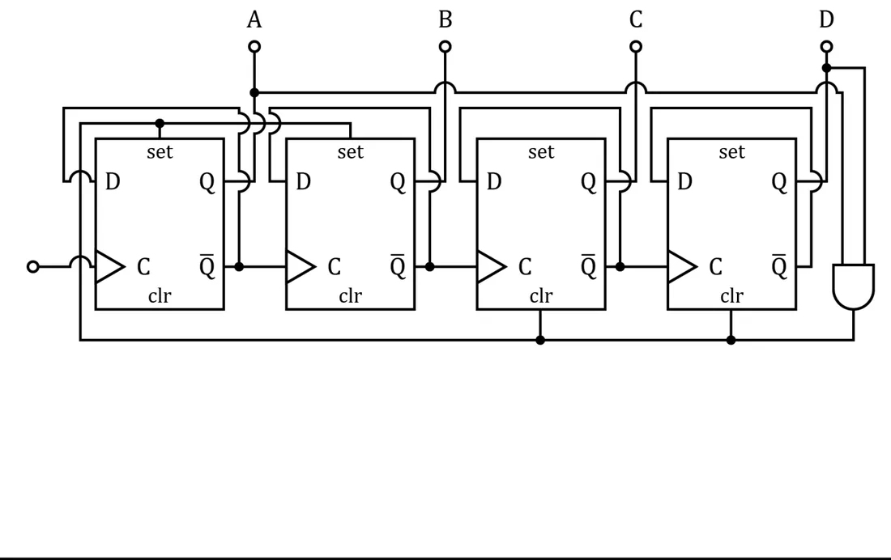
Чтобы счётчик начинал не с нуля, используют входы SET. Для последовательности 3…8: вентиль обнаруживает состояние 9 (1001), и тогда триггеры, у которых в числе 3 (0011) стоит единица, устанавливаются (SET), а остальные сбрасываются (CLR).
Задания на лабораторную (со слайда)
На D-триггерах: сдвиговый регистр, кольцевой счётчик, счётчик Джонсона, счётчик mod 9, счётчик от 3 до 9, псевдослучайный генератор с XOR; кроме того — 1-битная защёлка из RS-триггеров на NAND и последовательный регистр с параллельным выходом.
По шагам: Лабораторная 10.